생산자동화산업기사 (2019-04-27 기출문제)
1과목: 기계가공법 및 안전관리
1. 일반적으로 니형 밀링머신의 크기 또는 호칭을 표시하는 방법으로 틀린 것은?
- 코릿척의 크기
- 테이블 작업면의 크기(길이×폭)
- 테이블의 이동거리(좌우×전후×상하)
- 테이블의 전후 이송을 기준으로 한 호칭번호
(정답률: 72%)

2. 가늘고 긴 일정한 단면 모양을 가진 공구에 많은 날을 가진 절삭공구가 사용되며, 공작물의 홈을 빠르게 가공할 수 있어 대량 생산에 적합한 가공방법은?
- 보링(Boring)
- 태핑(Tapping)
- 셰이핑(Shaping)
- 브로칭(Broaching)
(정답률: 75%)
3. 탭(Tap)이 부러지는 원인이 아닌 것은?
- 소재보다 경도가 높은 경우
- 구멍이 바르지 못하고 구부러진 경우
- 탭 선단이 구멍 바닥에 부딪혔을 경우
- 탭의 지름에 적합한 핸들을 사용하지 않는 경우
(정답률: 78%)
4. 구성인선(Built-up Edge)이 생기는 것을 방지하기 위한 대책으로 틀린 것은?
- 절삭 속도를 높인다.
- 절삭 깊이를 깊게 한다.
- 절삭유를 충분히 공급한다.
- 공구의 윗면 경사각을 크게 한다.
(정답률: 74%)
5. 선반가공에 영향을 주는 절삭조건에 대한 설명으로 틀린 것은?
- 이송이 증가하면 가공 변질층은 깊어진다.
- 절사각이 커지면 가공 변질층은 깊어진다.
- 절삭 속도가 증가하면 가공 변질층은 얕아진다.
- 절삭 온도가 상승하면 가공 변질층은 깊어진다.
(정답률: 57%)
6. 다음 중 대형이며 중량의 공작물을 가공하기 위한 밀링 머신으로 중절삭이 가능한 것은?
- 나사 밀링머신(Thread Milling Machine)
- 만능 밀링머신(Universal Milling Machine)
- 생산형 밀링머신(Production Milling Machine)
- 플레이너형 밀링머신(Planer Type Milling Machine)
(정답률: 84%)
7. 연삭균열에 관한 설명으로 틀린 것은?
- 열팽창에 의해 발생된다.
- 공석강에 가까운 탄소강에서 자주 발생된다.
- 연삭균열을 방지하기 위해서는 결합도가 연한 숫돌을 사용한다.
- 이송을 느리게 하고 연삭액을 충분히 사용하여 방지할 수 있다.
(정답률: 40%)
8. 도면에 편심량이 3mm로 주어졌다. 이때 다이얼 게이지 눈금의 변위량이 얼마로 나타나도록 편심시켜야 하는가?
- 3mm
- 4.5mm
- 6mm
- 7.5mm
(정답률: 75%)
9. 게이지 블록 중 표준용(Calibration Grade)으로서 측정기류의 정도검사 등에 사용되는 게이지 등급은?
- 00(AA)급
- 0(A)급
- 1(B)급
- 2(C)급
(정답률: 76%)
10. 다음 중 산화알루미늄(Al2O3) 분말을 주성분으로 소결한 절삭공구 재료는?
- 세라믹
- 고속도강
- 다이아몬드
- 주조경질합금
(정답률: 77%)
11. 연삭가공 중 가공 표면의 표면거칠기가 나빠지고 정밀도가 저하되는 떨림현상이 나타나는 원인이 아닌 것은?
- 숫돌의 평형 상태가 불량할 경우
- 숫돌축이 편심되어 있을 경우
- 숫돌의 결합도가 너무 작을 경우
- 연삭기 자체에 진동이 있을 경우
(정답률: 68%)
12. 밀링머신에 관한 안전사항으로 틀린 것은?
- 장갑을 끼지 않도록 한다.
- 가공 중에 손으로 가공면을 점검하지 않는다.
- 칩받이가 있기 때문에 보호안경은 필요 없다.
- 강력 절삭을 할 때에는 공작물을 바이스에 깊게 물린다.
(정답률: 85%)
13. 허용할 수 있는 부품의 오차 정도를 결정한 후 각각 최대 최소 치수를 설정하여 부품의 치수가 그 범위 내에 드는지를 검사하는 게이지는?
- 다이얼 게이지
- 게이지 블록
- 간극 게이지
- 한계 게이지
(정답률: 70%)
14. 다음 중 기어가공의 절삭법이 아닌 것은?
- 형판을 이용하는 절삭법
- 다인공구를 이용하는 절삭법
- 총형공구를 이용하는 절삭법
- 창성을 이용하는 절삭법
(정답률: 57%)
15. 고속도강 절삭공구를 사용하여 저탄소강재를 절삭할 때 가장 일반적인 구성인선(Built-up Edge)의 임계속도(m/min)는?
- 50
- 120
- 150
- 170
(정답률: 75%)
16. 드릴로 구멍가공을 한 다음에 사용하는 공구가 아닌 것은?
- 리머
- 센터펀치
- 카운터 보어
- 카운터 싱크
(정답률: 83%)
17. 다음 중 수용성 절삭유에 속하는 것은?
- 유화유
- 혼성유
- 광유
- 동식물유
(정답률: 68%)
18. 선반에서 테이퍼의 각이 크고 길이가 짧은 테이퍼를 가공하기에 가장 적합한 방법은?
- 백기어 사용방법
- 심압대의 편위방법
- 복식 공구대를 경사시키는 방법
- 테이퍼 절삭장치를 이용하는 방법
(정답률: 46%)
19. CNC 선반에 대한 설명으로 틀린 것은?
- 축은 공구대가 전후좌우의 2방향으로 이동하므로 2축을 사용한다.
- 휴지(Dwell)기능은 지정한 시간 동안 이송이 정지되는 기능을 의미한다.
- 좌표치의 지령방식에는 절대지령과 중분지령이 있고, 한 블록에 2가지를 혼합하여 지령할 수 없다.
- 테이퍼나 원호를 절삭 시, 임의의 인선 반지름을 가지는 공구의 인선 반지름에 의한 가공경로의 오차를 CNC 장치에서 자동으로 보정하는 인선 반지름 보정기능이 있다.
(정답률: 62%)
20. 원주를 단식 분할법으로 32등분하고자 할 때, 다음 준비된 (분할판)을 사용하여 작업하는 방법으로 옳은 것은?
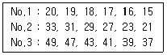
- 16구멍열에서 1회전과 4구멍씩
- 20구멍열에서 1회전과 10구멍씩
- 27구멍열에서 1회전과 18구멍씩
- 33구멍열에서 1회전과 18구멍씩
(정답률: 67%)
2과목: 기계제도 및 기초공학
21. (보기)에서 치수 기입의 원칙에 대한 설명 중 옳은 것을 모두 고른 것은?
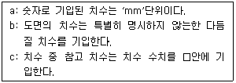
- a, b
- b, c
- a, c
- a, b, c
(정답률: 72%)
22. 호칭번호가 6900인 베어링에 대한 설명으로 옳은 것은?
- 안지름이 10mm인 니들 롤러 베어링
- 안지름이 12mm인 원통 롤러 베어링
- 안지름이 12mm인 자동조심 볼 베어링
- 안지름이 10mm인 단열 깊이 홈 볼 베어링
(정답률: 58%)
23. 파이프 상단 중앙에 드릴 구멍을 뚫은 그림과 같은 정면도를 보고 우측면도를 작성했을 때 다음 중 가장 적합한 것은?
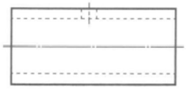
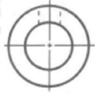
(정답률: 88%)
24. 조립되는 구멍의 치수가
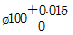
이고, 치수가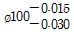
인 끼워맞춤에서 최소 틈새는?- 0.0⑤
- 0.015
- 0.030
- 0.045
(정답률: 77%)
25. 줄다듬질 가공을 나타내는 가공기호는?
- FF
- FS
- PS
- SH
(정답률: 75%)
26. 공구, 지그 등의 위치를 참고로 나타내는데 사용하는 선의 명칭은?
- 가상선
- 지시선
- 피치선
- 해칭선
(정답률: 69%)
27. 평행핀의 호칭방법을 옳게 나타낸 것은? 9단, 비경화강 평행핀으로 호칭지름은 6mm, 호칭 길이는 30mm이며, 공차는 m6이다.)
- 평행핀 – 6×30 m6 - St
- 평행핀 – 6 m6×30 - St
- 평행핀 St – 6×30 - m6
- 평행핀 St – 6 m6×30
(정답률: 63%)
28. 기하공차 표시와 관련하여 상호요구사항이 부가적으로 필요할 경우 Ⓜ또는 Ⓛ 기호 다음에 명시하는 특정기호는?
- Ⓒ
- Ⓩ
- Ⓟ
- Ⓡ
(정답률: 55%)
29. 치수선 및 치수 기입방법에 대한 설명으로 틀린 것은?
- 치수선은 가는 실선으로 긋는다.
- 치수선은 원칙적으로 지시하는 길이에 평행하게 긋는다.
- 치수 수치는 다른 치수선과 교차하여 겹치도록 기입한다.
- 치수선이 인접해서 연속되는 경우에 치수선은 되도록 동일 직선상에 가지런히 기입하는 것이 좋다.
(정답률: 87%)
30. 2개의 입체가 서로 만날 때 두 입체 표면에 만나는 선이 생기는데 이 선을 무엇이라고 하는가?
- 분할선
- 입체선
- 직립선
- 상관선
(정답률: 71%)
31. 다음 그림과 같이 막대 위에 두 물체가 있다. W1=84kgf일 때, 막대가 수평을 유지하기 위한 W2의 중량은?
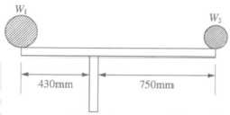
- 42kgf
- 48.16kgf
- 84kgf
- 146.51kgf
(정답률: 77%)
32. 3,800rpm으로 12.5kgf·m의 토크를 갖는 자동차 엔진의 마력은 약 얼마인가?
- 0.66PS
- 6.63PS
- 66.3PS
- 6663PS
(정답률: 64%)
33. SI 단위가 아닌 것은?
- g
- A
- K
- mol
(정답률: 62%)
34. 운동과 속도에 관련된 설명으로 틀린 것은?
- 가속도 운동 – 물체의 속력과 방향이 시간에 따라 변하는 운동
- 등속도 운동 – 물체가 일직선상에서 일정한 속력으로 움직이는 운동
- 상대 속도 – 물체가 이동한 거리를 이동하는 데 걸리는 시간으로 나눈 값
- 등가속 직선운동 – 직선상에서 물체의 속도가 일정하게 증가하거나 감소하는 운동
(정답률: 69%)
35. 전기회로에서 다음 설명에 해당하는 법칙은?
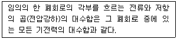
- 옴의 법칙
- 플레밍의 법칙
- 키르히호프 전류법칙
- 키르히호프 전압법칙
(정답률: 67%)
36. 1bar는 약 몇 Pa(파스칼)인가?
- 0.1
- 10
- 103
- 105
(정답률: 64%)
37. 30㎌ 콘덴서 3개를 직렬연결하면 합성 정전용량 [㎌]은?
- 0.1
- 0.3
- 10
- 30
(정답률: 74%)
38. 지구에서의 중력에 대한 설명으로 틀린 것은?
- 동일 장소에서는 질량이 같으면 같은 중력을 받는다.
- 동일 장소에서 중력의 크기는 물체의 질량에 비례한다.
- 중력은 물체의 무게에 따라 각각 다른 방향으로 작용한다.
- 질량이 1kg인 물체에 작용하는 중력의 크기를 1kgf라고 한다.
(정답률: 82%)
39. 다음 그림과 같은 용접의 맞대기 이음에서 하중을 P, 용접부의 길이를 l, 판 두께를 t라고 하면 용접부의 인장응력을 구하는 식은?
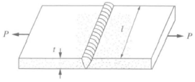
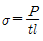
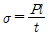
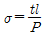
- σ = P · l · t
(정답률: 60%)
40. 도선의 전기저항에 대한 설명으로 틀린 것은?
- 도선의 길이에 비례한다.
- 도선의 단면적에 비례한다.
- 도선의 고유저항의 값에 비례한다.
- 도선에 전류를 흐르기 어렵게 하는 물질의 작용이다.
(정답률: 74%)
3과목: 자동제어
41. PD(비례미분)제어기는 제어계의 과도특성을 개선하기 위하여 쓴다. 이것에 대응하는 보상기는?
- 과도보상기
- 동상보상기
- 지상보상기
- 진상보상기
(정답률: 66%)
42.
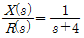
의 전달함수를 미분방정식으로 표현한 것으로 옳은 것은?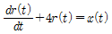
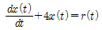
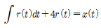
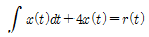
(정답률: 56%)
43. 전동기의 출력이 300kW이고 회전수가 1,500rpm인 경우에 전동기의 토크[kgf·m]는 약 얼마인가?
- 195
- 300
- 390
- 500
(정답률: 45%)
44. 다음 PLC 래더 다이어그램의 설명으로 틀린 것은?
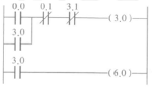
- 0.0은 입력이다.
- 0.1은 기동이다.
- 3.1은 인터로크이다.
- 3.0은 자기유지이다.
(정답률: 81%)
45. 단위 계단 함수 u(t)의 라플라스 변환으로 옳은 것은?
- 1
- s
- u(s)
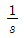
(정답률: 77%)
46. 실제의 시간과 관계된 신호로 제어가 행해지는 제어계는?
- 2진 제어계
- 논리제어계
- 동기제어계
- 디지털 제어계
(정답률: 60%)
47. 제어계에서 제어량을 조절하기 위해 제어대상에 가하는 양은?
- 제어량
- 조작량
- 기준 입력
- 동작신호
(정답률: 73%)
48. 제어량을 어떤 일정한 목표값으로 유지하는 것을 목적으로 하는 정치제어에 속하지 않는 것은?
- 주파수 제어
- 발전기의 조속기
- 자동전압 조정장치
- 잉크젯 프린터 헤드 위치제어
(정답률: 80%)
49. 다음 방향제어밸브 기호의 포트와 위치가 옳은 것은?
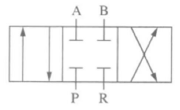
- 3포트 3위치
- 4포트 3위치
- 3포트 4위치
- 4포트 2위치
(정답률: 79%)
50. 다음 래더 다이어그램을 니모닉으로 프로그램할 때 스텝수는 몇 개인가? (단, END는 스텝수에 포함하지 않는다.)
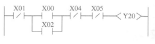
- 4
- 5
- 6
- 7
(정답률: 70%)
51. PLC의 IEC 표준 언어인 문자식 언어에 포함되지 않는 것은?
- IL(Instruction List)
- ST(Structured Text)
- FBD(Function Block Diagram)
- SFC(Sequential Function Chart)
(정답률: 65%)
52. 프로그래밍 언어 중에서 기계어를 문자와 1:1로 매칭하여 만든 언어는?
- C언어
- 기계어
- 고급언어
- 어셈블리 언어
(정답률: 79%)
53. 다음 데이터의 비트값을 연산한 결과로 옳은 것은?
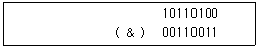
- 00110000
- 01111000
- 10000111
- 10110111
(정답률: 64%)
54. 서보기구에서 제어량에 속하는 것은?
- 수위, PH
- 온도, 압력
- 위치, 각도
- 속도, 전기량
(정답률: 80%)
55. 직류 서보전동기 운전 시 일정 토크 조건하에서 자속이 증가하면 회전수는 어떻게 변하는가?
- 불변이다.
- 감소한다.
- 증가한다.
- 0(Zero)이 된다.
(정답률: 52%)
56. 위치제어 서보유압시스템의 구성요소 중 명령신호와 피드백 신호의 오차에 비례하여 서보밸브의 스풀을 절환하여 유압을 실런더로 보내는 역할을 하는 요소로 옳은 것은?
- 플래퍼
- 서보앰프
- 토크모터
- 피드백 신호 발생기
(정답률: 47%)
57. 다음 그림과 같은 블록선도의 결합방법으로 옳은 것은?
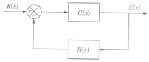
- 병렬 결합
- 직렬 결합
- 직병렬 결합
- 피드백 결합
(정답률: 79%)
58. PLC의 접지방법으로 적절한 것은?
- 접지거리는 최대한 길게 접지한다.
- 접지선은 1mm2 이하의 전선을 사용한다.
- 접지는 제3종 접지의 전용 접지를 사용한다.
- PLC 내부 접지가 되어 있어 접지를 하지 않아도 된다.
(정답률: 69%)
59. 열처리로의 온도제어계는 어느 것에 속하는가?
- 비율제어
- 정치제어
- 추종제어
- 프로그램 제어
(정답률: 56%)
60. PI 제어기 설계 시 비례상수가 3이고, 적분 시간이 5인 조절계의 전달함수를 복소수 평면 s로 표현한 것으로 옳은 것은?
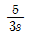
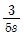
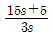
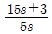
(정답률: 59%)
4과목: 메카트로닉스
61. TTL IC와 비교한 CMOS IC의 일반적인 특징이 아닌 것은?
- 정전기에 약하다.
- 소비전력이 작다.
- 잡음 여유가 작다.
- 동작 속도가 느리다.
(정답률: 53%)
62. CNC 공작기계의 서보기구에 관한 설명으로 틀린 것은?
- 동작의 안정성과 응답성이 중요하다.
- 개방회로방식은 정확한 위치제어가 가능하다.
- 정밀도가 높은 위치제어를 위해서 반폐쇄회로방식과 폐쇄회로방식을 많이 사용한다.
- 구동모터의 회전에 따라 기계 본체의 테이블이나 주축 헤드가 동작하는 기구를 서보기구라고 한다.
(정답률: 65%)
63. 중앙처리장치 또는 기억장치의 동작 속도와 외부 버스로 연결된 입출력장치의 동작 속도를 맞추는 데 사용하는 레지스터는?
- 버퍼 레지스터
- 시퀀스 레지스터
- 시프트 레지스터
- 어드레스 레지스터
(정답률: 61%)
64. RLC 공진회로에 대한 설명으로 틀린 것은?
- 병렬공진 시 임피던스는 최대가 된다.
- 직렬공진 시 전류의 크기는 최대가 된다.
- 공진 시 전압과 전류의 위상은 이상(異相)이 된다.
- 병렬공진 시 전압과 전류의 위상은 동상(同相)이 된다.
(정답률: 72%)
65. P형 반도체에 도핑하는 불순물이 아닌 것은?
- 인듐
- 비소
- 붕소
- 알루미늄
(정답률: 56%)
66. 시리얼 통신방식이 아닌 것은?
- USB
- GPIB
- RS-422
- RS-232C
(정답률: 69%)
67. 브로칭 가공의 특징에 속하지 않는 것은?
- 다듬질 가공면은 래핑으로 가공한 면보다 정밀하다.
- 브로치의 제작이 매우 어렵고 고가이므로 대량 생산에만 이용된다.
- 브로치의 형상에 따라 다양한 단면 형상의 공작물을 가공할 수 있다.
- 1회의 통과(절삭)운동으로 가공을 완료하므로 작업시간이 짧다.
(정답률: 52%)
68. 그레이코드에서 연속되는 2개의 숫자 간에는 몇 개의 bit가 다른가?
- 1bit
- 2bit
- 3bit
- 4bit
(정답률: 61%)
69. 정현파 자속의 주파수를 2배로 했을 때 유기기전력은 어떻게 되는가?
- 2배 증가
- 3배 증가
- 4배 증가
- 5배 증가
(정답률: 66%)
70. 변압기의 원리와 관계있는 작용은?
- 표피작용
- 편자작용
- 전기자 반작용
- 전자유도작용
(정답률: 71%)
71. 100V, 1,000W의 전열기를 사용할 때 이 전열기에 흐르는 전류[A]가 얼마인가?
- 6
- 8
- 10
- 12
(정답률: 87%)
72. 순수 반도체에 불순물을 첨가하여 전자 혹은 전공의 수를 증가시키는 과정은?
- 도핑(Doping)
- 공유 결합(Covalent)
- 이온화(Ionization)
- 재결합(Recombination)
(정답률: 73%)
73. DC 서보모터에 요구되는 특징이 아닌 것은?
- 최대 토크가 클 것
- 회전 토크가 클 것
- 전기자 관성이 클 것
- 토크의 직선성이 양호할 것
(정답률: 71%)
74. N형 반도체와 관계없는 것은?
- 비소
- 붕소
- 도우너
- 5가의 가전자
(정답률: 52%)
75. 다이캐스팅 주조의 특징이 아닌 것은?
- 정밀도가 우수하다.
- 대량 생산이 가능하다.
- 기공이 적고 치밀하다.
- 용융점이 높은 금속의 주조에 적합하다.
(정답률: 64%)
76. 스테핑 모터의 구동방법과 가장 거리가 먼 것은?
- 런핑 구동
- 초퍼 구동
- 과전압 구동
- 병렬저항 구동
(정답률: 56%)
77. 2진수 0.01112를 10진수로 바꾼 값으로 옳은 것은?
- 0.04375
- 0.4375
- 4.375
- 43.75
(정답률: 74%)
78. 마이크로프로세서에 대한 설명으로 틀린 것은?
- 연산회로와 각종 레지스터 및 제어회로 등으로 구성된다.
- 주기억장치와 보조 기억장치의 기억용량을 증대시키기 위해 사용된다.
- 기억장치로부터 명령어를 불러와서 복호화하고 실행하는 기능을 수행한다.
- 외부와의 연결을 위해 어드레스 버스와 데이터 버스 및 제어 버스 등을 가져야 한다.
(정답률: 68%)
79. DC 서보모터와 비교한 AC 서보모터에 대한 특징으로 틀린 것은?
- 3상으로 제어한다.
- 제어회로가 복잡하다.
- 브러시의 유지보수가 필요하다.
- 고정자가 권선으로 방열이 쉽다.
(정답률: 70%)
80. 다음 중 경질 결합도가 아닌 것은?
- P
- H
- S
- R
(정답률: 59%)